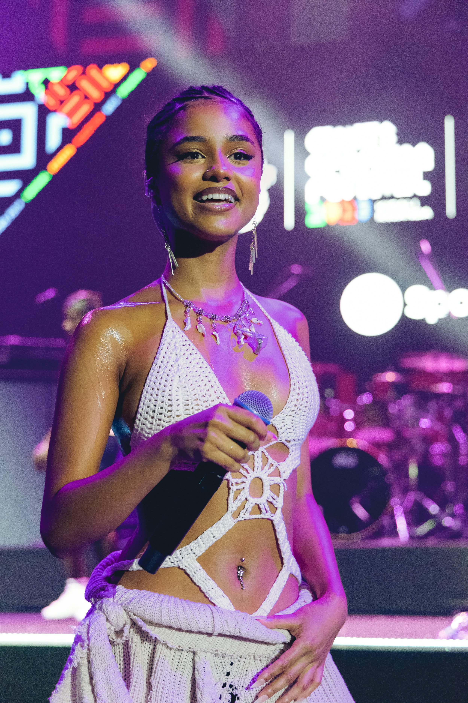

Project 01 / 08
TYLA
for Blastfest
Live at Blastfest. Festival stage, Afrobeats — one of the frames that holds the room.

Project 01 / 08
for Blastfest
Live at Blastfest. Festival stage, Afrobeats — one of the frames that holds the room.